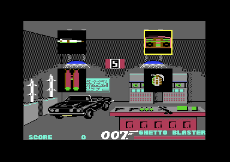
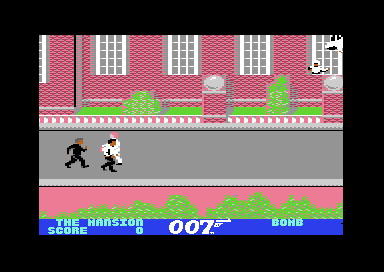

<meta charset="utf-8">
<meta name="viewport" content="width=device-width, initial-scale=1">
<title>The Living Daylights: gameplay</title>
<link rel="preconnect" href="https://fonts.googleapis.com">
<link rel="stylesheet" href="https://fonts.googleapis.com/css2?family=Lato:wght@400;700;900&family=IBM+Plex+Mono:wght@400;500&display=swap">
<style>
:root{
  --bg:#23262d; --paper:#e9e7e1; --surface:#ffffff; --surface-2:#f1efea; --line:#d5d3cc; --line-soft:#e0ded8;
  --ink:#2f3136; --ink-soft:#55585f; --ink-mute:#80838a;
  --link:#1f5fa8; --link-hover:#154480; --accent:#1f5fa8;
  --amber:#c25a00; --cyan:#1f5fa8; --coral:#d04a3a; --green:#2a8a4a; --violet:#4a5bd6; --hl:#fff0c2;
  --chip:#2f3136; --chip-ink:#ffffff;
  --c64blue:#40318d; --c64grey:#686868;
  --fd:'Lato',system-ui,sans-serif; --fb:'Lato',system-ui,sans-serif; --fm:'IBM Plex Mono',ui-monospace,Menlo,monospace;
  --col:1080px; --gx:68px; --fs:17px; --lh:1.6; --hw:900; --h1:46px; --h2:26px; --sy:48px; --pp:26px; --r:10px;
  --plate-shadow:0 1px 2px rgba(0,0,0,.05),0 4px 14px rgba(0,0,0,.05);
}
*{box-sizing:border-box}
html{background:var(--bg);min-height:100%}
body{background:var(--paper);color:var(--ink);font-family:var(--fb);font-size:var(--fs);line-height:var(--lh);max-width:var(--col);margin:0 auto;min-height:100vh;padding:0 0 4rem}
h1,h2,h3{font-weight:var(--hw);letter-spacing:-.01em;text-wrap:balance;color:var(--ink);margin:0}
.wrap{padding:0 var(--gx)}
.hero{padding:48px var(--gx) 8px;text-align:left}
.eyebrow{font-family:var(--fm);font-size:12px;letter-spacing:.08em;text-transform:uppercase;color:var(--ink-mute);margin:0 0 10px}
.hero h1{font-size:var(--h1);line-height:1.15;letter-spacing:-.02em;margin:0 0 14px}
.hero .sub{margin:0 0 .6em;color:var(--ink-soft)}
section{padding:var(--sy) 0 24px}
section:last-of-type{border-bottom:none}
.fig{font-family:var(--fm);font-size:12px;letter-spacing:.08em;text-transform:uppercase;color:var(--ink-mute);margin:0 0 10px}
h2.t{font-size:var(--h2);margin-bottom:12px}
.lede{color:var(--ink-soft);margin:0 0 30px}
.plate{background:var(--surface);border:1px solid var(--line);border-radius:var(--r);padding:var(--pp);box-shadow:var(--plate-shadow)}
.cap{font-size:14px;color:var(--ink-mute);margin-top:14px;line-height:1.55}
.cap b{color:var(--ink);font-weight:700}
code{font-family:var(--fm);font-size:.82em;background:var(--chip);color:var(--chip-ink);border-radius:4px;padding:2px 6px;overflow-wrap:break-word;-webkit-box-decoration-break:clone;box-decoration-break:clone}

.ft-grid{display:grid;gap:6px}
.ft-grid button{padding:0;position:relative;line-height:0}
.ft-grid canvas{width:100%;image-rendering:pixelated;display:block}
.ft-tag{position:absolute;left:3px;top:3px;font:500 11px/1.3 var(--fm);background:rgba(255,255,255,.88);color:var(--ink);border-radius:3px;padding:1px 4px}
.ft-mark{position:absolute;right:3px;bottom:3px;font:500 10px/1.3 var(--fm);background:var(--chip);color:var(--chip-ink);border-radius:3px;padding:1px 4px}
.ft-big canvas{width:100%;max-width:768px;image-rendering:pixelated;display:block;margin:0 auto}
.ft-table{border-collapse:collapse;font-size:14px;width:100%}
.ft-table td,.ft-table th{border-bottom:1px solid var(--line-soft);padding:5px 8px;text-align:left;vertical-align:top}
.ft-two{display:grid;grid-template-columns:1fr 1fr;gap:16px;align-items:start}
.ft-four{display:grid;grid-template-columns:repeat(3,1fr);gap:12px;margin:0 0 20px}
.ft-four .plate,.ft-two .plate{margin:0;padding:12px}
.ft-shot,.ft-px{width:100%;height:auto;image-rendering:pixelated;display:block}
.ft-wide{max-width:960px;margin:0 auto}
.plate{margin:0 0 22px}
.ft-scroll{overflow-x:auto}
.ft-lab{display:block;font-family:var(--fm);font-size:13px;color:var(--ink-soft);margin:6px 0}
.ft-range{width:100%;max-width:520px;display:block}
.ft-controls{display:grid;grid-template-columns:repeat(3,1fr);gap:14px;margin:12px 0 0}
.ft-read{font-family:var(--fm);font-size:14px;background:var(--surface-2);border-radius:6px;padding:10px 12px;margin:12px 0 0}
.ft-bar-out{height:12px;background:var(--surface-2);border:1px solid var(--line);border-radius:6px;overflow:hidden;margin:10px 0 0;max-width:520px}
.ft-bar-out div{height:100%;background:repeating-linear-gradient(45deg,var(--amber) 0 6px,#e08a3c 6px 12px)}
.ft-meter{position:relative;width:110px;height:18px;background:var(--surface-2);border:1px solid var(--line);border-radius:4px;overflow:hidden}
.ft-meter span{position:absolute;left:0;top:0;bottom:0;background:var(--cyan);opacity:.35}
.ft-meter b{position:relative;font:500 12px/18px var(--fm);padding-left:6px}
.ft-objs{white-space:nowrap}
.ft-obj{display:inline-flex;flex-direction:column;align-items:center;margin:0 3px 0 0;padding:2px;background:#222;border-radius:4px;vertical-align:top}
.ft-obj i{font:500 10px/1.2 var(--fm);color:#fff;font-style:normal}
.ft-swapped{outline:2px dashed var(--amber);outline-offset:-2px}
.ft-swapped i{text-decoration:line-through;text-decoration-color:var(--amber)}
.ft-table canvas{background:#222;border-radius:4px;image-rendering:pixelated}
.ft-dead{display:flex;flex-wrap:wrap;gap:6px;margin:12px 0 0}
.ft-dead button{font-size:12px;padding:4px 8px}
@media (max-width:760px){:root{--gx:16px;--h1:36px;--pp:14px}.ft-two,.ft-four,.ft-controls{grid-template-columns:1fr}}
sup.fn{font-size:.7em;line-height:0}
sup.fn a{text-decoration:none}
sup.fn + sup.fn::before{content:","}
.overview-shot{margin:22px 0}
.overview-shot img{width:100%;max-width:768px;height:auto;aspect-ratio:384/272;image-rendering:pixelated;display:block}
.overview-shot figcaption{font-size:14px;color:var(--ink-mute);margin-top:8px;max-width:768px}
</style>
<!-- tabs -->
<header class="hero">
  <p class="eyebrow">Commodore 64 · 1987 · Domark</p>
  <h1>The Living Daylights: gameplay</h1>
  <p class="sub">How Bond runs, shoots, and gets hurt, what Q branch hands him, and what each of the eight levels asks of him.</p>
</header>
<main class="wrap">

<section id="running">
  <p class="fig">01 · Running and shooting</p>
  <h2 class="t">Bond runs only when the crosshair lets him</h2>
  <p class="lede">The joystick does two jobs. Standing still, it moves the crosshair; pushed against the right edge of the screen, it sets Bond running. The whole game turns on that switch between aiming and moving.</p>
  <p>When Bond stands, the stick moves the crosshair, sprite 0, and it speeds up the longer the stick is held (<a href="controls.html#crosshair">the crosshair</a>). Moving the crosshair to the right edge starts Bond running (<a href="source.html#151F"><code>$151F</code></a>), and the scenery scrolls only while he runs. Pulling the stick left, or letting it go, stops him. Fire shoots at the crosshair, wherever it is (<a href="source.html#2CE7"><code>$2CE7</code></a>). Running, the stick no longer aims: up jumps, and down with right rolls (<a href="controls.html#jump">jumping, rolling, and ducking</a>).</p>
  <p>A shot that misses leaves a bullet hole in the scenery: the game copies the character under the crosshair, punches a hole into the copy, and lets it fade (<a href="source.html#27B3"><code>$27B3</code></a>, <a href="source.html#28F7"><code>$28F7</code></a>). An enemy's shot that misses Bond leaves a hole too.</p>
</section>

<section id="enemies">
  <p class="fig">02 · Enemies</p>
  <h2 class="t">Three at a time, and not all of them enemies</h2>
  <p class="lede">Up to three figures can be on screen at once, each in a slot of its own (<a href="source.html#1E34"><code>$1E34</code></a>). A figure rises into view from behind the scenery, waits, shoots, and sinks back again, unless Bond hits it first.</p>
  <p>Each level has a table of places where a figure can appear, between 20 and 47 of them (<a href="source.html#2013"><code>$2013</code></a>), and a shortest wait between appearances with a random part added (<a href="source.html#2023"><code>$2023</code></a>). A figure that is shot falls through six frames (<a href="source.html#1E9C"><code>$1E9C</code></a>), and its place rests for a while before it is used again (<a href="source.html#00A2"><code>$A2</code></a>).</p>
  <p>Not every figure is a real enemy. The game marks each one as an enemy or not (<code>$016F</code>), and the weapon matters (<a href="source.html#2D67"><code>$2D67</code></a>). Shooting a real enemy with a weapon that kills knocks him down for points; a weapon that does not kill does nothing to him. Shooting any other figure with a weapon that does not kill scores 100, but knocking one down costs 500. On <a href="#gibraltar">Gibraltar</a> the other figures are the soldiers of the exercise, and the real enemy is the assassin among them.</p>
  <p>When a figure shoots, it hits Bond half the time, chosen by a free-running timer (<a href="source.html#1F08"><code>$1F08</code></a>). The energy a hit takes depends on the level and on who fired, with more added if Bond was running.</p>
  <div class="ft-scroll"><table class="ft-table" style="max-width:720px">
    <thead><tr><th>Level</th><th>A real enemy's hit</th><th>Another figure's hit</th><th>Added while running</th><th>Points for a real enemy</th></tr></thead>
    <tbody>
      <tr><td>1 Gibraltar</td><td>8</td><td>1 (paint)</td><td>4</td><td>500</td></tr>
      <tr><td>2 Concert Hall</td><td>1</td><td>0</td><td>2</td><td>200</td></tr>
      <tr><td>3 The Pipeline</td><td>1</td><td>0</td><td>5</td><td>200</td></tr>
      <tr><td>4 The Mansion</td><td>2</td><td>0</td><td>5</td><td>200</td></tr>
      <tr><td>5 The Fairground</td><td>0</td><td>0</td><td>0</td><td>200</td></tr>
      <tr><td>6 Tangiers</td><td>1</td><td>1</td><td>2</td><td>200</td></tr>
      <tr><td>7 Afghanistan</td><td>1</td><td>0</td><td>3</td><td>200</td></tr>
      <tr><td>8 Whittaker's House</td><td>0</td><td>0</td><td>0</td><td>200</td></tr>
    </tbody>
  </table></div>
  <p class="cap">The tables at <a href="source.html#203B"><code>$203B</code></a>, <a href="source.html#2033"><code>$2033</code></a>, <a href="source.html#2043"><code>$2043</code></a>, and <a href="source.html#204B"><code>$204B</code></a>, one byte a level. Bond starts with 119 units of energy. On the Fairground and in Whittaker's House the danger comes from elsewhere.</p>
</section>

<section id="energy">
  <p class="fig">03 · Energy and lives</p>
  <h2 class="t">119 units of energy and five lives</h2>
  <p class="lede">A new game gives Bond five lives (<code>$0150</code>) and 119 units of energy (<code>$012F</code>, set by <a href="source.html#3DAD"><code>$3DAD</code></a>). The bar under the status line draws one block for every 8 units and a part block for the rest (<a href="source.html#2659"><code>$2659</code></a>).</p>
  <p>When the energy drops below 2, Bond dies: the game plays tune 3, stops him, and starts the level again with a full bar and one life fewer (<a href="source.html#1100"><code>$1100</code></a>). Losing the last life ends the game and goes back to the title. Besides the enemies' shots, these take energy:</p>
  <div class="ft-scroll"><table class="ft-table" style="max-width:720px">
    <thead><tr><th>What hits Bond</th><th>Energy</th><th>How to avoid it</th></tr></thead>
    <tbody>
      <tr><td>Tripping over an <a href="#obstacles">obstacle</a></td><td>4</td><td>Jump it (<a href="source.html#238B"><code>$238B</code></a>)</td></tr>
      <tr><td>The pipe worker's thrown thing, on <a href="#pipeline">The Pipeline</a></td><td>10</td><td>Jump, roll, or wear the hard hat (<a href="source.html#24F8"><code>$24F8</code></a>)</td></tr>
      <tr><td>The thing that comes along the pipe, on <a href="#pipeline">The Pipeline</a></td><td>4</td><td>Roll (<a href="source.html#7080"><code>$7080</code></a>)</td></tr>
      <tr><td>A shot from a doorway, on The Mansion, Tangiers, Afghanistan, and Whittaker's House</td><td>22</td><td>Duck or jump clear (<a href="source.html#1B4C"><code>$1B4C</code></a>)</td></tr>
      <tr><td>A balloon that floats away, on <a href="#fairground">The Fairground</a></td><td>30</td><td>Burst it first (<a href="source.html#1922"><code>$1922</code></a>)</td></tr>
      <tr><td>A bomb that lands under Bond, on <a href="#mansion">The Mansion</a></td><td>60</td><td>Be somewhere else (<a href="source.html#1874"><code>$1874</code></a>)</td></tr>
    </tbody>
  </table></div>
</section>

<section id="obstacles">
  <p class="fig">04 · Obstacles</p>
  <h2 class="t">Obstacles are columns of the map</h2>
  <p class="lede">The game never tests whether Bond touches an obstacle. Each level has a list of the map's columns where Bond trips (<a href="source.html#2362"><code>$2362</code></a>), and while he runs the game compares the middle layer's scroll column with it (<a href="source.html#238B"><code>$238B</code></a>).</p>
  <p>Gibraltar has four, the Concert Hall, The Pipeline, and Tangiers five each, Afghanistan four, and the other levels none. The Mansion's list starts empty and fills up as the helicopter bombs the path: every crater becomes an obstacle (<a href="source.html#185A"><code>$185A</code></a>), and is taken off the list once Bond has tripped on it. A trip is a roll that ends with Bond lying on the ground for 60 frames, more than a second, while the figures keep shooting (<a href="source.html#3440"><code>$3440</code></a>, <a href="source.html#3367"><code>$3367</code></a>). A jump at the right moment carries him over. On the long levels the middle layer goes round its map four times (<a href="levels.html#loop">how a level loops</a>), so each obstacle comes back four times.</p>
</section>

<section id="q-branch">
  <p class="fig">05 · Q branch</p>
  <h2 class="t">Four gadgets, and seven seconds to choose</h2>
  <figure class="overview-shot"><figcaption>Q branch, before level 2. The cursor is on the ghetto blaster, and the countdown digit stands between the gadgets.</figcaption></figure>
  <p>After each of the first six levels, Bond visits Q branch (<a href="source.html#3746"><code>$3746</code></a>). Q's room has four of the gadgets on display, a different four for each level (<a href="source.html#2B4A"><code>$2B4A</code></a>). The stick moves a frame from one to the next and fire takes it, while a large digit counts down four counts of 90 frames, about seven seconds in all. The chosen gadget flashes and becomes Bond's second weapon, beside the Walther PPK he always has (<a href="source.html#2B48"><code>$2B48</code></a>). In play, opening the <a href="controls.html#weapon-menu">weapon menu</a> switches between the two.</p>
  <p>On four levels one of the four gadgets is the one the level needs, and the code tests for it by name; on The Mansion and Afghanistan any of Q's weapons does far better than the Walther PPK:</p>
  <div class="ft-scroll"><table class="ft-table" style="max-width:820px">
    <thead><tr><th>Before level</th><th>Q offers</th><th>What the code does with them</th></tr></thead>
    <tbody>
      <tr><td>2 Concert Hall</td><td>missile pen, ghetto blaster, infra sight, grenade</td><td>The infra sight shows who is an enemy (<a href="source.html#2C9E"><code>$2C9E</code></a>).</td></tr>
      <tr><td>3 The Pipeline</td><td>missile pen, hard hat, cigarette, bomb</td><td>The hard hat keeps off the pipe worker's throws (<a href="source.html#2CD7"><code>$2CD7</code></a>).</td></tr>
      <tr><td>4 The Mansion</td><td>mortar, bazooka, dynamite, bomb</td><td>Any of them brings the helicopter down at once; the Walther PPK takes ten shots (<a href="source.html#2E71"><code>$2E71</code></a>).</td></tr>
      <tr><td>5 The Fairground</td><td>mortar, ghetto blaster, crossbow, bomb</td><td>Only the crossbow bursts balloons (<a href="source.html#2EA8"><code>$2EA8</code></a>).</td></tr>
      <tr><td>6 Tangiers</td><td>missile pen, sleep dart gun, cigarette, grenade</td><td>Only the sleep dart gun clears a doorway for points; every other weapon costs 500 (<a href="source.html#2EFA"><code>$2EFA</code></a>).</td></tr>
      <tr><td>7 Afghanistan</td><td>mortar, bazooka, cigarette, grenade</td><td>Any of them clears a doorway with one hit; the Walther PPK takes four.</td></tr>
    </tbody>
  </table></div>
  <p>There is no Q branch before Gibraltar, where Bond's second weapon is the paint gun (<a href="source.html#3E07"><code>$3E07</code></a>), or before Whittaker's House, where he has only the Walther PPK.</p>
</section>

<section id="weapons">
  <p class="fig">06 · Weapons</p>
  <h2 class="t">Fourteen weapons, most of them used once</h2>
  <p class="lede">The game names fourteen weapons (<a href="source.html#2A84"><code>$2A84</code></a>). The first five can be fired again and again; from the grenade on, each is used once.</p>
  <div class="ft-scroll"><table class="ft-table" style="max-width:720px">
    <thead><tr><th>Number</th><th>Weapon</th><th>Kills</th><th>Fires</th></tr></thead>
    <tbody>
      <tr><td>0</td><td>Walther PPK</td><td>yes</td><td>every press</td></tr>
      <tr><td>1</td><td>paint gun</td><td>no</td><td>every press</td></tr>
      <tr><td>2</td><td>crossbow</td><td>yes</td><td>every press</td></tr>
      <tr><td>3</td><td>bazooka</td><td>yes</td><td>once every 30 frames</td></tr>
      <tr><td>4</td><td>sleep dart gun</td><td>no</td><td>every press</td></tr>
      <tr><td>5</td><td>grenade</td><td>yes</td><td>once, with a blast</td></tr>
      <tr><td>6</td><td>ghetto blaster</td><td>yes</td><td>once, with a blast</td></tr>
      <tr><td>7</td><td>missile pen</td><td>yes</td><td>once, with a blast</td></tr>
      <tr><td>8</td><td>cigarette</td><td>yes</td><td>once, with a blast</td></tr>
      <tr><td>9</td><td>bomb</td><td>yes</td><td>once, with a blast</td></tr>
      <tr><td>10</td><td>dynamite</td><td>yes</td><td>once, with a blast</td></tr>
      <tr><td>11</td><td>mortar</td><td>yes</td><td>once, with a blast</td></tr>
      <tr><td>12</td><td>infra sight</td><td>no</td><td>works when switched to, on the Concert Hall</td></tr>
      <tr><td>13</td><td>hard hat</td><td>no</td><td>works when switched to, on The Pipeline</td></tr>
    </tbody>
  </table></div>
  <p class="cap">Whether a weapon kills is the table at <a href="source.html#2BBE"><code>$2BBE</code></a>; how it fires is decided in <a href="source.html#2CE7"><code>$2CE7</code></a>.</p>
  <p>A weapon used once stays in Bond's hand for a while, then the game switches back to the Walther PPK and does not let him switch again (<a href="source.html#2C3E"><code>$2C3E</code></a>). The two gadgets that are not weapons work when they are switched to rather than fired: the infra sight colours the Concert Hall's enemies red and everyone else light red, and the hard hat is drawn onto Bond's head, one sprite shape a frame (<a href="graphics.html#hard-hat">the hard hat</a>).</p>
</section>

<section id="score">
  <p class="fig">07 · Score</p>
  <h2 class="t">Points, and points taken away</h2>
  <p>The score is six digits, added to one digit at a time (<a href="source.html#25AE"><code>$25AE</code></a>); a score that would go below zero stays at zero. The high score is kept until the machine is switched off and is not saved.</p>
  <div class="ft-scroll"><table class="ft-table" style="max-width:640px">
    <thead><tr><th>What Bond does</th><th>Points</th></tr></thead>
    <tbody>
      <tr><td>Knocks down a real enemy</td><td>500 on Gibraltar, 200 elsewhere</td></tr>
      <tr><td>Hits another figure with a weapon that does not kill</td><td>100</td></tr>
      <tr><td>Knocks down another figure</td><td>−500</td></tr>
      <tr><td>Shoots the pipe worker, or bursts a balloon</td><td>100</td></tr>
      <tr><td>Brings down the helicopter</td><td>1,000</td></tr>
      <tr><td>Clears a doorway</td><td>500, or −500 on Tangiers without the sleep dart gun</td></tr>
      <tr><td>Finishes a level</td><td>1,000 for each level before it: none for Gibraltar, 7,000 for Whittaker's House (<a href="source.html#32FF"><code>$32FF</code></a>)</td></tr>
    </tbody>
  </table></div>
</section>

<section id="levels">
  <p class="fig">08 · The eight levels</p>
  <h2 class="t">Eight levels, each with its own trick</h2>
  <p class="lede">Every level runs the same loop of running, figures, and shots. On top of it, the routine at <a href="source.html#306F"><code>$306F</code></a> runs the level's own hazard each frame, and the level ends in its own way (<a href="source.html#3004"><code>$3004</code></a>). The <a href="levels.html">Maps</a> tab draws each level's scenery whole.</p>

  <h3 id="gibraltar" style="margin:28px 0 8px">1 · Gibraltar</h3>
  <p>An SAS exercise on the Rock. The soldiers fire paint, which costs Bond 1 unit, and his own second weapon is the paint gun. One soldier at a time is the assassin with live ammunition, shown in his own colour and costing 8 a hit (<a href="source.html#1D64"><code>$1D64</code></a>); he can only be knocked down with a weapon that kills, so Bond has to switch to the Walther PPK. Knocking him down ends the level (<a href="source.html#1E9C"><code>$1E9C</code></a>), and nothing else does: running to the end of the scenery only stops Bond there. The longer the run, the likelier the assassin: his chance goes up when the far layer reaches its columns 60 and 120 the second time round (<a href="source.html#3004"><code>$3004</code></a>).</p>

  <h3 id="concert-hall" style="margin:28px 0 8px">2 · Concert Hall</h3>
  <p>Bond is joined by a companion who runs behind him, the defector, here and on the next two levels (<a href="source.html#34A5"><code>$34A5</code></a>). Every figure is drawn black, so enemies and bystanders look alike until Bond switches to the infra sight, which for a time colours the enemies red and the others light red (<a href="source.html#2C9E"><code>$2C9E</code></a>). The level ends when Bond reaches the end of the scenery.</p>

  <h3 id="pipeline" style="margin:28px 0 8px">3 · The Pipeline</h3>
  <p>Two hazards of its own (<a href="source.html#23D6"><code>$23D6</code></a>, <a href="source.html#7080"><code>$7080</code></a>). A pipe worker steps onto the gantry every eighth column of scrolling and throws something along a straight line at Bond. A throw that lands costs 10 energy, and the hard hat makes the throws harmless; shooting the worker first is worth 100 points. At three places on the map, something comes along the pipe at Bond's feet, and only a roll gets him past it without losing 4 energy.</p>

  <h3 id="mansion" style="margin:28px 0 8px">4 · The Mansion</h3>
  <p>The safe house. A helicopter flies over from the right and drops bombs at random, each one whistling for a second before it lands (<a href="source.html#181C"><code>$181C</code></a>). A bomb under Bond costs 60 energy, and every crater it leaves becomes an obstacle. The helicopter falls when its count of hits, which starts at 9, drops below zero. Each shot of the Walther PPK takes 1 from it, so the pistol needs ten; any of Q's weapons takes 16, so one shot is enough. It is worth 1,000 points. A henchman dressed as a milkman stands in a doorway and throws bottles at two heights. The level is short: it ends after 84 columns of the far layer, if the doorway is cleared.</p>
  <figure class="overview-shot"><figcaption>The helicopter arrives at the top right. Its three sprites are white until it is hit.</figcaption></figure>

  <h3 id="fairground" style="margin:28px 0 8px">5 · The Fairground</h3>
  <p>The only level that does not scroll: the fairground is one screen, copied in whole (<a href="source.html#3CB9"><code>$3CB9</code></a>). Twenty balloons rise from a seller one at a time, at random speeds, drifting left and right (<a href="source.html#1922"><code>$1922</code></a>). Only the crossbow bursts them, for 100 points each; a balloon that reaches the top bursts with a bang that shakes the screen and costs Bond 30 energy. The level also has a doorway target, set up like the snipers' doorways on later levels but with no sniper moving in it, and the level ends only when it has been shot and the twenty balloons are gone. Once it is shot, the balloons come faster (<a href="source.html#2F5A"><code>$2F5A</code></a>).</p>

  <h3 id="tangiers" style="margin:28px 0 8px">6 · Tangiers</h3>
  <p>Rooftops, with a sniper in a doorway. Shooting the doorway's figure clears it, but only the sleep dart gun scores: four darts and 500 points. Four shots of the Walther PPK, or one of anything else, clear it as well and take 500 away (<a href="source.html#2EFA"><code>$2EFA</code></a>). The level ends at the end of the scenery once the doorways are cleared.</p>

  <h3 id="afghanistan" style="margin:28px 0 8px">7 · Afghanistan</h3>
  <p>The Soviet air base, with doorways like Tangiers but none of its scruples: any of Q's weapons clears one with a single hit for 500 points, and the Walther PPK with four.</p>

  <h3 id="whittaker" style="margin:28px 0 8px">8 · Whittaker's House</h3>
  <p>The shortest level: it ends after 44 columns of the far layer. Whittaker's doorway is in reach from the start, Bond cannot switch weapons, and Whittaker takes 27 shots of the Walther PPK (<a href="source.html#3C45"><code>$3C45</code></a>). After him comes the ending, the score, and the title again.</p>
</section>

</main>

</main>

<footer style="margin:16px 0 0;padding:22px var(--gx) 0;border-top:1px solid #e0ded8;font-family:'IBM Plex Mono',ui-monospace,Menlo,monospace;font-size:12px;color:#80838a"><a href="https://github.com/gamesexplained/gamesexplained" style="color:#1f5fa8;text-decoration:none">GitHub</a> · <a href="https://discord.gg/3V9GWyRDWV" style="color:#1f5fa8;text-decoration:none">Discord</a><br>© Games Explained contributors. Write-ups, facts and symbol maps are available under <a href="https://creativecommons.org/licenses/by-sa/4.0/" style="color:#1f5fa8;text-decoration:none">CC BY-SA 4.0</a>; code under <a href="https://opensource.org/licenses/MIT" style="color:#1f5fa8;text-decoration:none">MIT</a></footer>
